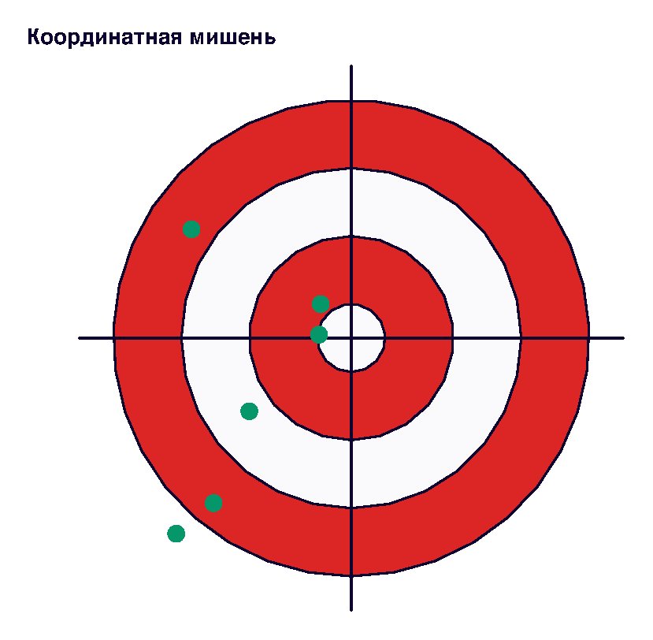

Глава 7 · Глубокое погружение в Turtle
Мини-проект — координатная мишень
Настоящая маленькая инфографика — мишень, оси, случайные точки и подпись, собранные из уже знакомых инструментов.
Что мы построим
koordinatnaya_mishen.py
import turtle
import random
random.seed(4)
screen = turtle.Screen()
screen.setup(width=420, height=420)
artist = turtle.Turtle()
artist.speed(0)
artist.hideturtle()
rings = [(140, "#DC2626"), (100, "#FAFAFC"), (60, "#DC2626"), (20, "#FAFAFC")]
for radius, color in rings:
artist.penup()
artist.goto(0, -radius)
artist.pendown()
artist.fillcolor(color)
artist.pencolor("#0D0230")
artist.begin_fill()
artist.circle(radius)
artist.end_fill()
artist.penup()
artist.goto(-160, 0)
artist.pendown()
artist.goto(160, 0)
artist.penup()
artist.goto(0, -160)
artist.pendown()
artist.goto(0, 160)
artist.penup()
for _ in range(6):
x = random.randint(-120, 120)
y = random.randint(-120, 120)
artist.goto(x, y)
artist.dot(10, "#059669")
artist.goto(-190, 170)
artist.write("Координатная мишень", font=("Arial", 13, "bold"))
screen.exitonclick()Результат выполнения

Полноценная небольшая инфографика — не просто мишень, а мишень С осями координат, точками
«попаданий» и подписью. Соберём её из того, что уже знаем: концентрические окружности с
заливкой, оси через goto(), случайные точки из главы 6 и
подпись через write().
Разложим на слои
| Слой | Из чего состоит | Что уже знакомо |
|---|---|---|
| Кольца мишени | 4 закрашенные окружности убывающего радиуса | begin_fill()/circle()/end_fill() |
| Перекрестье | две линии через центр | goto() из главы 6 |
| Точки попаданий | случайные координаты | random + dot() из главы 6 |
| Подпись | текст в углу | write() из этой главы |
Код целиком
koordinatnaya_mishen_kod.py
import random
random.seed(4) # фиксированный seed — точки одинаковые при каждом запуске
# кольца мишени
rings = [(140, "#DC2626"), (100, "#FAFAFC"), (60, "#DC2626"), (20, "#FAFAFC")]
for radius, color in rings:
artist.penup()
artist.goto(0, -radius)
artist.pendown()
artist.fillcolor(color)
artist.begin_fill()
artist.circle(radius)
artist.end_fill()
# перекрестье осей
artist.penup(); artist.goto(-160, 0); artist.pendown(); artist.goto(160, 0)
artist.penup(); artist.goto(0, -160); artist.pendown(); artist.goto(0, 160)
# случайные точки попаданий
artist.penup()
for _ in range(6):
x = random.randint(-120, 120)
y = random.randint(-120, 120)
artist.goto(x, y)
artist.dot(10, "#059669")
# подпись
artist.goto(-190, 170)
artist.write("Координатная мишень", font=("Arial", 13, "bold"))Почему random.seed(4)
Как и в главе 6, фиксированный seed делает картинку воспроизводимой — при каждом запуске точки окажутся ровно там же. Уберите эту строку, чтобы получить новый набор точек при каждом запуске.
★★ Самостоятельная задача
Подпись координат
Рядом с каждой точкой попадания добавьте write() с её координатами.
★★★ Задача повышенной сложности
Счёт попаданий в яблочко
Посчитайте (напечатайте в консоль), сколько случайных точек попало в центральное красное кольцо (радиус < 60) — потребуется формула расстояния из главы 5.
Практика: координатная мишень
Модуль turtle открывает нативное окно Python — выполните локально в VS Code, PyCharm или Jupyter
Практика выполняется локально